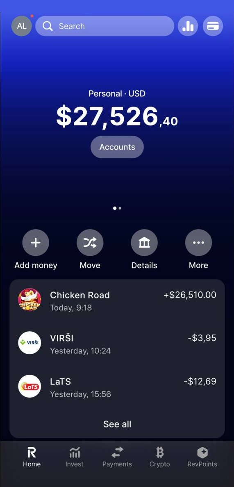

Casino ADM
Dove giocare a Chicken Road: come scegliere un operatore ADM
Cosa guardare in un casino online con licenza italiana prima di registrarti: concessione, prelievi, condizioni dei bonus e strumenti di autolimitazione.
🔞 Solo 18+ · Gioco d'azzardo con denaro reale

Chicken Road è disponibile presso diversi operatori di casino online con licenza. La scelta di dove giocare pesa più di qualsiasi considerazione sulla strategia: è l'unica decisione che riguarda davvero i tuoi soldi.
La concessione ADM viene prima di tutto
In Italia il gioco a distanza è consentito solo agli operatori autorizzati dall'Agenzia delle Dogane e dei Monopoli. Il numero di concessione è pubblicato in fondo alla home page dell'operatore ed è verificabile sull'elenco ufficiale ADM. Se non lo trovi, la valutazione si ferma lì.
Cosa confrontare, in ordine di importanza
- Tempi di prelievo reali. Non quelli dichiarati nella pagina dei pagamenti, ma quelli riportati dagli utenti.
- Requisiti di scommessa. Un bonus con wagering alto vale meno di un bonus più piccolo con condizioni chiare, e non tutti i giochi contribuiscono allo stesso modo.
- Deposito minimo. Rilevante se vuoi provare l'operatore prima di impegnarti.
- Strumenti di autolimitazione. Limiti di deposito, di sessione e autoesclusione sono obbligatori sugli operatori autorizzati: verifica che siano facili da attivare, non nascosti in tre menu.
- Assistenza in italiano. Utile soprattutto quando c'è un problema su un prelievo.
Perché non pubblichiamo una classifica «migliore casino»
Le ricerche per singoli operatori vengono raggruppate in una sola tabella comparativa invece che in pagine separate, e la tabella contiene solo operatori con concessione verificata. Una classifica costruita sul valore delle commissioni, e non sulle condizioni reali, non aiuterebbe nessuno.
Prima di registrarti
Fissa un budget e rispettalo, verifica la concessione e ricorda che il gioco è riservato ai maggiori di 18 anni. Chicken Road resta un gioco d'azzardo con margine a favore del banco: va trattato come intrattenimento a pagamento, non come una fonte di reddito.